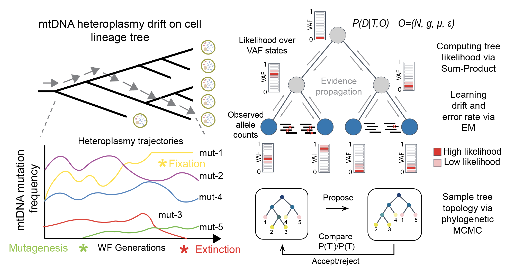

MitoDrift reconstructs single-cell lineage relationships from mitochondrial DNA (mtDNA) mutations by modeling heteroplasmy drift and measurement noise with a Wright–Fisher hidden Markov Tree (WF-HMT). It applies population genetics principles (genetic drift) to model mtDNA heteroplasmy in single cells in order to reconstruct high-precision lineage trees from single-cell genomics/multiome data. MitoDrift uses expectation-maximization (EM) to obtain maximum-likelihood estimates of drift, mutation, and error rates, then performs phylogenetic MCMC to quantify the uncertainty in tree topology. The primary output is a phylogeny with posterior clade support, and downstream summaries such as confidence-refined trees and clone partitions. Inputs can be mtDNA allele counts from any single-cell genomics assays that capture mtDNA variation (e.g., mtscATAC-seq, MAESTER, ReDeeM).

Installation
# from a local checkout
if (!requireNamespace("devtools", quietly = TRUE)) install.packages("devtools")
devtools::install_local(".")For faster MCMC trace IO, install qs2 with TBB:
remotes::install_cran("qs2", type = "source", configure.args = "--with-TBB --with-simd=AVX2")Quick start
This uses a tiny example dataset packaged under inst/extdata/.
You can run this from a terminal in the package root (these settings are intentionally small/fast for a demo):
Rscript inst/bin/run_mitodrift_em.R \
--mut_dat inst/extdata/small_test_mut_dat.csv \
--outdir mitodrift_demo \
--tree_mcmc_iter 50 \
--tree_mcmc_chains 2 \
--tree_mcmc_burnin 10Outputs in mitodrift_demo/ include mitodrift_object.rds plus tree files and diagnostics.
Once the run finishes:
library(mitodrift)
mut_dat <- read.csv(
system.file("extdata", "small_test_mut_dat.csv", package = "mitodrift")
)
md <- readRDS("mitodrift_demo/mitodrift_object.rds")
phy_trim <- trim_tree(md$tree_annot, conf = 0.5)
plot_phylo_heatmap2(
phy_trim,
mut_dat,
dot_size = 1,
branch_width = 0.3,
branch_length = FALSE,
node_conf = TRUE,
het_max = 1
)Input data requirements
Long format (mut_dat)
One row per cell–variant pair, with counts for alternate allele (a) and total depth (d).
| cell | variant | a | d |
|---|---|---|---|
| PD45534aj | MT_10448_T_C | 0 | 2348 |
| PD45534aj | MT_11787_T_C | 1462 | 2000 |
| PD45534aj | MT_1244_T_C | 2 | 1500 |
| PD45534ak | MT_10448_T_C | 5 | 2100 |
IMPORTANT: Include rows where a = 0 so that every cell × variant combination is represented (the observation model uses total depth).
Inference settings & diagnostics
Model parameters (EM fitting)
-
--fit_params: Enable automatic parameter fitting via EM (default:TRUE) -
--fit_param_max_iter: Maximum EM iterations (default: 100) -
--fit_param_epsilon: EM convergence threshold on parameter changes (default: 1e-3) -
--k: Number of VAF bins for discretizing heteroplasmy levels (default: 20) -
--npop: Population size for Wright-Fisher model (default: 600) -
--eps: Mutation rate per branch (default: 0.001; auto-fitted iffit_params=TRUE) -
--err: Variant detection error rate (default: 0; auto-fitted iffit_params=TRUE) -
--ngen: Number of WF generations (default: 100; auto-fitted iffit_params=TRUE)
Phylogenetic MCMC settings
-
--tree_mcmc_chains: Number of independent MCMC runs (default: 1; recommended 10-50 for robust inference. For large trees e.g., >8000 cells, use less chains to avoid memory limits) -
--tree_mcmc_iter: Maximum iterations per chain (default: 100; can be overridden by automatic termination via ASDSF convergence check) -
--conv_thres: ASDSF threshold for MCMC termination (default:NULL; e.g., 0.05-0.1 for auto-convergence). ASDSF (Average Standard Deviation of Split Frequencies) summarizes topology agreement across chains. A lower value indicates good mixing. Values < 0.05 indicate good convergence; < 0.1 is acceptable for exploratory analyses or large trees. -
--tree_mcmc_batch_size: Iteration interval for saving traces and checking convergence (default: 1000) -
--tree_mcmc_burnin: Initial samples to discard from each chain (default: 0; recommended 10-20% of iterations)
Parallelization options
-
--ncores: Default number of cores for likelihood computation during tree optimization (default: 1) -
--ncores_em: Cores for parallel EM parameter fitting across variants (default: 1) -
--ncores_nj: Cores for initial NJ tree distance matrix computation viaparallelDist(default: 1)- NOTE: Different
ncores_njvalues may yield slightly different NJ topologies due to floating-point rounding
- NOTE: Different
-
--ncores_qs: Cores for parallel file I/O (qs2compression) during MCMC and annotation (default: 1) -
--ncores_annot: Cores for computing clade frequencies from MCMC traces (default: same as--ncores)
Core concepts for interpretation
- Initial tree topology: a point-estimate starting tree constructed using neighbor joining (NJ) on continuous VAF matrices. This provides a fully-resolved (binary) initialization that empirically captures strong lineage signal before posterior sampling.
- Posterior clade support: per-node support values in
tree$node.label(0–1) estimated from MCMC topology sampling. - Confidence-based topology refinement: collapse internal edges below a support cutoff
τto obtain a refined lineage tree.
Clone assignment workflow
- Trim low-confidence edges:
tau <- 0.5
phy_trim <- trim_tree(phy, conf = tau)- Assign clones (top-level root-descending clades):
clade_df <- assign_clones_polytomy(phy_trim, k = Inf, return_df = TRUE)